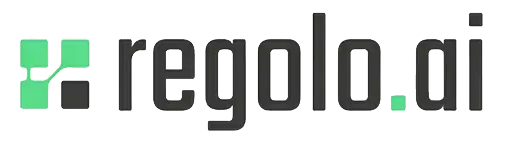

powered by Regolo.AI
powered by Regolo.AI

For our BestIA customers with dedicated GPU and unlimited app publishing.
Pulling models and generating configuration...
You are not logged in to ollama cloud.
Please execute ollama signin and click Retry.